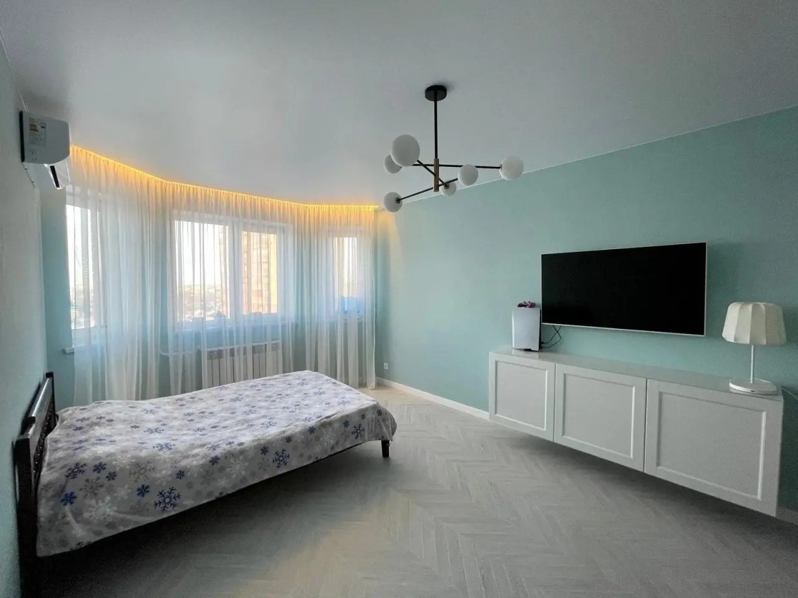

Малярные работы в Сургуте
Покраска выдает каждую неровность, поэтому основное время уходит на подготовку: грунт, шпаклевка в несколько слоев, шлифовка и проверка под боковым светом. Красим стены и потолки, клеим обои, делаем откосы.
Проверяем стены под боковым светом

Что входит в работы
Малярные работы делаем как отдельную услугу или как часть ремонта под ключ.
Грунтование
Укрепляем основание, чтобы шпаклевка и краска держались.
Шпаклевка стен и потолков
Стартовая и финишная, в несколько слоев под покраску.
Шлифовка
Убираем риски и наплывы, проверяем плоскость лампой.
Армирование стыков и трещин
Серпянка и стеклохолст там, где возможны трещины.
Покраска стен
Два слоя краски, четкие границы цветов и ровные углы.
Покраска потолков
Без полос и пятен, с подготовкой под нужный свет.
Поклейка обоев
Флизелиновые, виниловые, под покраску и фотообои.
Откосы
Выравнивание и покраска откосов окон и дверей.
Укрывка и уборка
Защищаем окна, двери и полы, убираем после работы.
Цены
Цены за работу без материалов. Итог зависит от объема и состояния помещения, поэтому точную сумму считаем по смете после замера.
Как проходят работы
Хорошая покраска на 80% состоит из подготовки.
-
1
Замер и выбор
Смотрим стены, обсуждаем цвета, тип краски или обоев.
-
2до начала работ
Смета
Считаем площади и слои шпаклевки по каждой комнате.
-
3
Подготовка
Укрываем окна и полы, грунтуем, армируем стыки.
-
4
Шпаклевка и шлифовка
Выводим плоскость в несколько слоев и проверяем под боковым светом.
-
5
Покраска или обои
Красим в два слоя или клеим обои, делаем откосы.
-
6акт приемки
Сдача
Смотрим стены вместе при дневном и искусственном свете, подписываем акт.
Наши малярные работы
Нажмите на фото, чтобы открыть его крупно.
Вопросы и ответы
Не нашли свой вопрос? Позвоните, ответим и подскажем, с чего начать.
+7 (995) 665-65-99Сколько слоев шпаклевки нужно под покраску?
Обычно два-три: стартовый выравнивает, финишный делает поверхность гладкой. Под темные и матовые краски требования выше, поэтому шлифуем и проверяем стены лампой под углом.
Какую краску лучше выбрать?
Для комнат подходит матовая или глубокоматовая моющаяся краска, для кухни и коридора износостойкая. Подскажем по конкретным маркам и посчитаем расход.
Можно покрасить стены по старым обоям?
Нет. Старые обои снимаем, иначе краска отслоится вместе с ними, а стыки будут видны.
Сколько стоят малярные работы в комнате?
Зависит от площади стен и их состояния. Ориентир: шпаклевка от 350 руб./м2, покраска в два слоя от 300 руб./м2. Точную сумму считаем по смете.
Малярные работы: шпаклевка, покраска и обои
Малярные работы в квартире в Сургуте заказывают и отдельно, и как часть ремонта под ключ. Цветные стены, скрытые двери и подсветка потолка хорошо выглядят только на идеально ровном основании, поэтому шпаклевке и шлифовке уделяем больше всего времени.
Что входит в малярные работы
- грунтование и шпаклевка стен и потолков;
- шлифовка и проверка плоскости под боковым светом;
- покраска стен в один или несколько цветов;
- поклейка обоев и фотообоев, отделка откосов.
Если стены сильно неровные, сначала нужна штукатурка по маякам, об этом на странице черновой ремонт. Цена покраски стен за м2 и всех подготовительных работ видна в смете до начала работ.
Другие услуги
Можно заказать отдельно или вместе: смету считаем на весь объем сразу.
Замер и смета
Оставьте телефон, и мы договоримся о времени замера. После замера составим смету: ее можно спокойно изучить и задать вопросы.
- Перезвоним и уточним задачуАдрес, площадь и что хотите сделать
- Приедем на замерОбмеряем квартиру, посмотрим стены, полы и сети
- Составим сметуС ценой каждой работы и сроками этапов